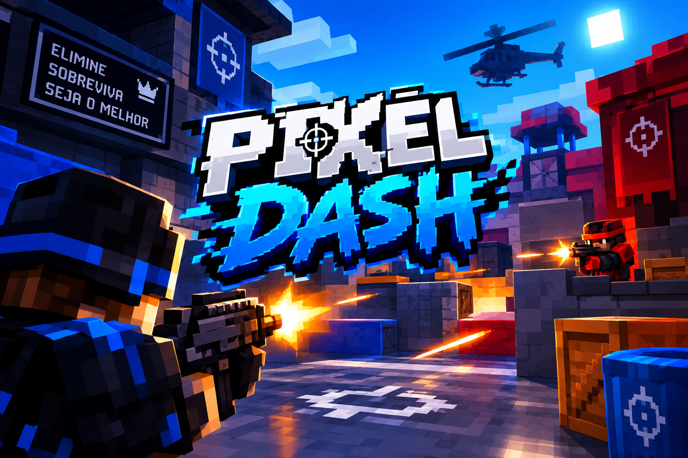

pixel dash

📧 Sistema de Gmail no Lobby
No Lobby do Pixel Dash, o jogador poderá informar seu Gmail para criar ou acessar sua conta. O e-mail será usado para identificar o jogador e ajudar a salvar seu progresso, configurações e informações da conta.
Depois de colocar o Gmail, o jogador poderá entrar no jogo e acessar seu perfil normalmente.
📧 Colocar o Gmail → 👤 Criar/entrar na conta → 💾 Salvar o progresso → 🎮 Entrar no jogo.